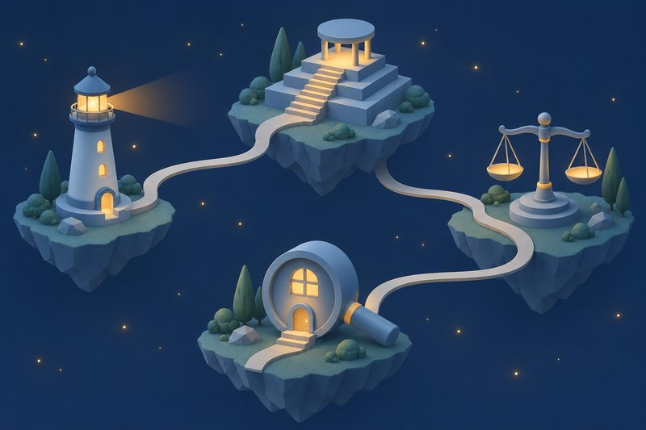

娛樂天眼通首頁導讀：四個入口各自回答什麼問題（2026年11月版）
打開一個評價網站的首頁，最容易犯的錯是從最顯眼的地方開始看。這個月我把 https://www.casinoeyes.tw/ 的首頁從上滑到下，發現它其實可以拆成四個入口，每個入口回答的問題不一樣，能回答的範圍也各有極限。這篇是 2026 年 11 月的導讀筆記，只談結構與判讀方式，不點名任何平台。
先說清楚定位。娛樂天眼通自稱是資訊整理與內容導覽平台，不涉及實際交易或投注操作，免責聲明也寫明內容僅供參考，不構成建議、邀請或保證。可是首頁同時放了導向平台的優惠連結，所以讀者最好把它當成一份需要檢驗的資料，而不是一份標準答案。
入口一：熱門評價，回答的是「大家在看什麼」
首頁的熱門區塊依搜尋與社群聲量整理，娛樂天眼通自己在旁邊加了一句註記：熱門只反映關注度，不代表最安全。這句話值得反覆讀。聲量可能來自口碑，也可能來自爭議、廣告或代理擴張，一家平台被討論得多，只說明它被很多人注意到，不說明它值得信任。
入口二：評價排行，回答的是「照這套方法誰分數高」
排行依出金速度百分之二十五、安全口碑百分之二十五、體驗金優惠百分之二十、遊戲豐富度百分之十五、客服品質百分之十五加權。這組權重是評價站自己訂的，換一套權重，名次就可能改變。評分說明也提到，165 打詐儀表板的通報紀錄已納入安全分並在備註欄標示，新收錄的平台則依官網條件與公開資訊保守評分。
讀排行時先看的三樣東西
- 備註欄寫了什麼：有沒有通報、是否提到仿冒站或出金偏慢。
- 安全分本身，而不是只看綜合分；優惠與遊戲分數高，不代表安全。
- 評分說明裡的方法限制，例如新收錄平台的資料本來就比較少。
入口三：體驗金比較，回答的是「條件長什麼樣」
這一區列出各家體驗金的金額與流水倍數。評價站反覆強調金額大不代表好領，流水才是重點，還要看可玩範圍、提領上限與平台安不安全。依評價站表列，體驗金金額約 88 到 388，提領上限約 500 到 1000，意思是贏再多也只能領到上限。體驗金、首儲與返水都是有條件的行銷活動，不是收入，這個入口最適合拿來看懂條件，而不是拿來挑選。
入口四：詐騙查詢，回答的是「有沒有紀錄」
詐騙查詢導向的名單頁，整理警政署 165 打詐儀表板的公開通報、玩家討論度與出金評價。娛樂天眼通自己提醒：165 通報是民眾通報紀錄，不等於法院定罪；查無通報也不代表百分之百安全；有通報還要分清楚是本站、仿冒站，還是同名的釣魚網站。網路上的名單也可能過舊或出自業者互黑。
四個入口的共同盲點
四個入口都依賴同一個網站的資料與判斷。讀者無法從外部驗證「逐家查證」這類宣稱，所以比較穩當的作法是交叉比對，把每一個結論都當成假設。
我自己的核對順序
- 先讀免責聲明與評選方法，知道分數怎麼來。
- 再看詐騙查詢與排行備註，留意每一則通報的描述方式。
- 最後才看熱門與體驗金比較，並把優惠當成條件而不是好處。
- 有疑問的地方，回頭查官方公告與 165 的公開資料。
關於首頁中段的五步驟
首頁中段有一段引導註冊的流程。我刻意不照著走，原因很簡單：一個同時放優惠連結的頁面，引導流程本來就帶有推廣性質。評價站可能有推廣合作，這不必然代表內容造假，但讀者應該把資訊和引導分開看，看完資訊之後，什麼都不做也是一個完整的選項。
一句給自己的提醒
導讀的目的是看懂，不是被帶著走。
收尾：先替自己畫好邊界
未滿 18 歲不可參與。娛樂天眼通的常見問題寫「台灣對線上博弈屬灰色地帶，刑法第 266 條規範網路賭博」；補充一點，該條在 2022 年修法後已明文把透過網際網路、電子通訊等方式賭博納入處罰，所以灰色地帶不等於沒有法律風險，請先確認所在地法規。若仍要接觸任何涉及金錢的活動，先訂好金額與時間上限，輸了不追。遇到詐騙撥 165，覺得壓力大或難以控制時，可撥衛福部安心專線 1925，24 小時免付費。
※ 本文僅為資訊整理與風險提醒，不構成任何建議，也不推薦任何平台。參與線上博弈涉及法律與財務風險，請先確認所在地法規；未滿 18 歲請勿參與。遇到詐騙請撥 165 反詐騙專線。